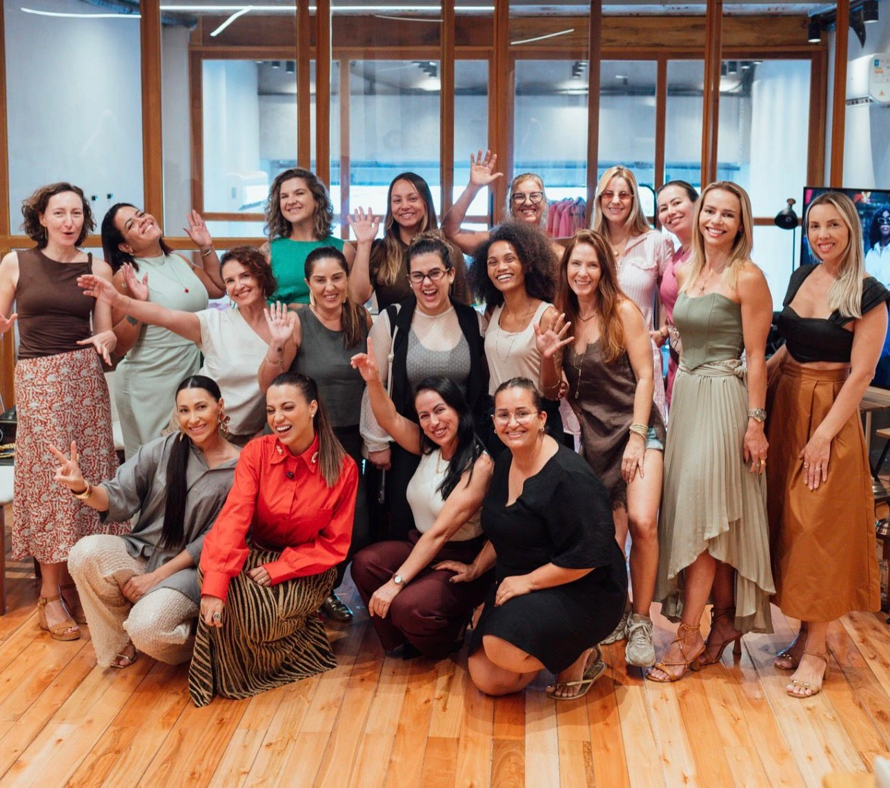

Quando identidade e imagem se alinham, sua presença comunica autoridade e a sua imagem te posiciona como referência.
Experiência presencial, profunda e transformadora.
Existe uma distância entre quem você é por dentro e o que a sua imagem comunica por fora. Isso não é vaidade — é estratégia.
O problema não é sua capacidade. É a desconexão entre identidade e imagem.
A Imersão Gênesis é uma jornada integrada que conecta quem você é à forma como o mundo te percebe.
"Antes de mudar a roupa, revelamos a mulher."
Uma experiência completa que transforma a forma como você se vê, se posiciona e é percebida pelo mundo.
Você não sai apenas com novas roupas. Você sai com uma nova percepção sobre quem você é.
Cada encontro é uma experiência única, pensada para transformar de dentro para fora.

A transformação não é apenas estética. Ela é interna, emocional e estratégica.
Sim. Porque a Imersão Gênesis não ensina apenas estilo. Ela trabalha identidade, crenças internas, presença e posicionamento.
Estilo é consequência de identidade.